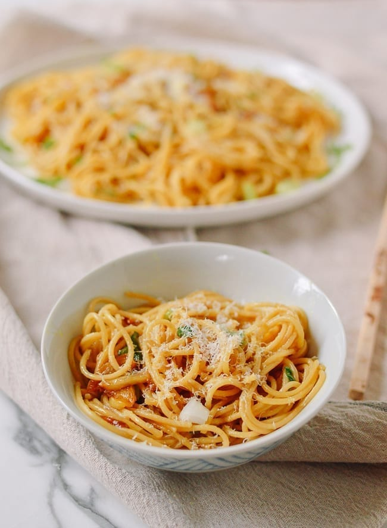

Garlic Noodle

Description
These garlic noodles are so incredibly quick, easy, and tasty, combining a few Western and Asian ingredients––that you probably already have on hand––to make one very flavorful bowl of deliciousness.
Serve them either as a side dish, or as a quick and easy vegetarian main, with some bok choy or sauteed broccoli on the side!
Ingredients
- 12 oz spaghetti
- salt
- 8 cloves garlic
- 1 tablespoon soy sauce
- 1-2 teaspoon brown sugar
- 1/4 cup parmesan cheese
Steps
- Bring a large pot of salted water to a boil. Cook the noodles/pasta according to package instructions. If using fresh noodles, you may simply need to blanch them. (Reserve some of the pasta cooking water, as you may need it in the sauce later.)
- Meanwhile, heat the butter in a large skillet over medium heat and add the garlic. Cook for 5 minutes, until lightly caramelized, and stir in the turmeric (if using), oyster sauce, soy sauce, brown sugar, and sesame oil. Stir for 1 minute and add the scallions.
- After 30 seconds, to let the scallions wilt, toss in the cooked pasta and parmesan cheese. If the sauce is too thick, add a few tablespoons of the noodle cooking water to loosen them up. Serve!